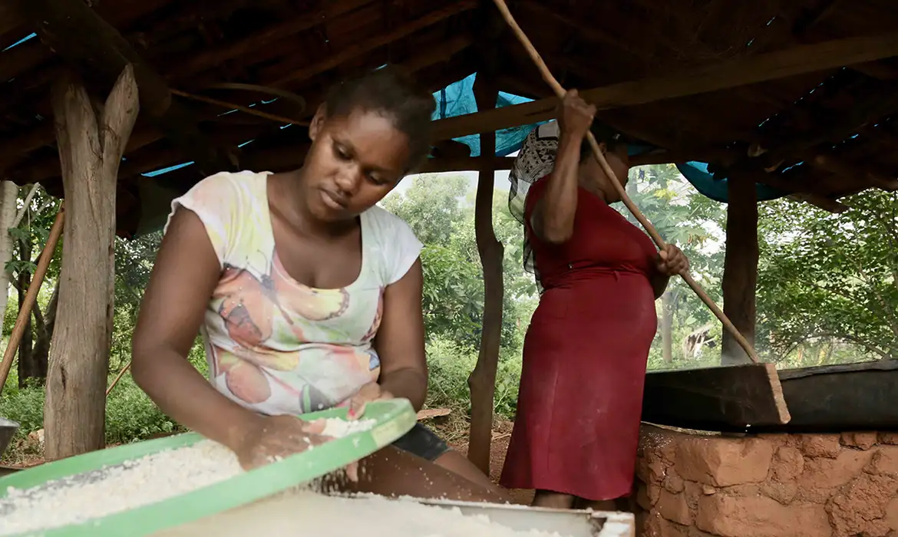
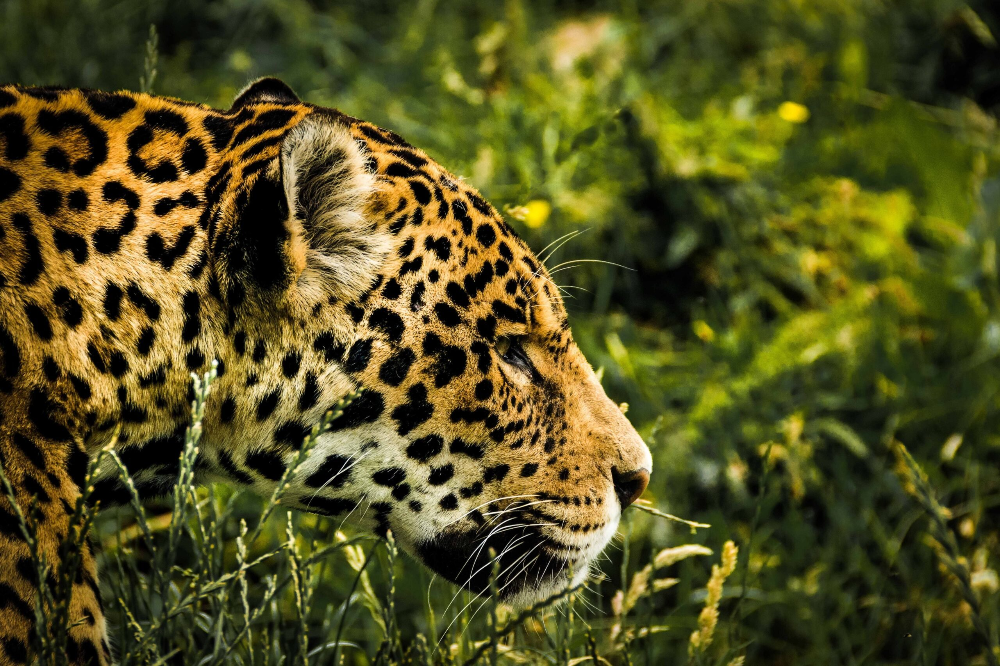
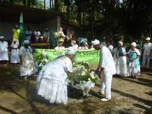

Resistência e Proteção do Território
Os Kalungas lutam pela demarcação e proteção de suas terras tradicionais, preservando seu modo de vida e a biodiversidade local.
Os Kalungas são uma das maiores comunidades quilombolas do Brasil, vivendo principalmente no interior de Goiás, preservando tradições, rituais e uma conexão profunda com a terra e a natureza.

Os Kalungas cultivam suas terras com técnicas tradicionais e sustentáveis, preservando a flora local e garantindo a autonomia alimentar da comunidade.
A história e os saberes Kalungas são transmitidos oralmente através de contos, cantos e celebrações que fortalecem a identidade e o senso de comunidade.
Os Kalungas lutam pela demarcação e proteção de suas terras tradicionais, preservando seu modo de vida e a biodiversidade local.
Celebram festas que unem elementos africanos e católicos, reforçando laços comunitários e o respeito aos ancestrais.
A identidade Kalunga é marcada por práticas religiosas, culinária típica, artesanato e um forte sentimento de pertencimento ao território.
Celebração religiosa
Rito católico que reúne a comunidade Kalunga em agradecimento e pedidos de proteção, mesclando elementos africanos e indígenas.
Tradição agrícola
Cerimônia que marca o início do ciclo agrícola, expressando respeito à terra e à natureza, fundamental para a sobrevivência da comunidade.
Celebração comunitária
Momento de união, música, dança e reforço dos laços sociais entre os membros da comunidade Kalunga.